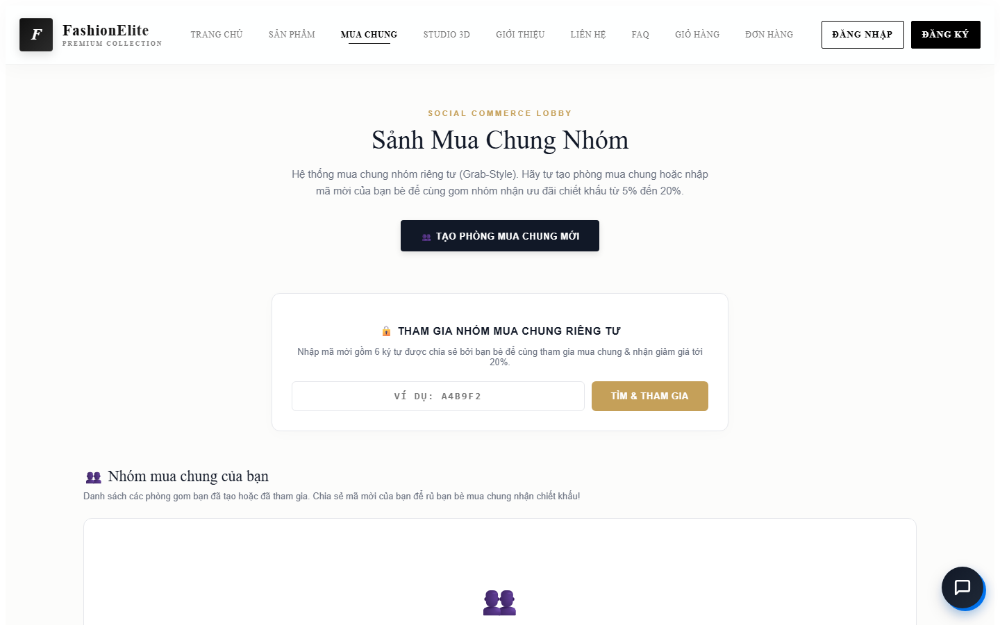

TYPESCRIPT · REACT 19 · R3F
FashionElite
✓ 910.812đ Group-Buy Split
FashionElite
Shop-Quan-Ao
✓ 910.812đ Group-Buy Split
NODE 01 · TỔNG QUAN & BÀI TOÁN
FashionElite: Mua Chung Realtime, Diễn Đàn & Trợ Lý AI
Kết hợp Mua Chung Xã Hội, Diễn Đàn Cộng Đồng và Trợ Lý AI
2 / 4 / 8
Phòng Mua Chung Socket.IO
910.812đ
Phân bổ chuẩn từng đồng
10 Intents
Gemini 2.5 Flash + RAG